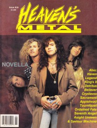

Novella
|  |
| May 1992 Heaven's Metal |
Media coverage:
- Jun 1991 in Heaven's Metal "Novella's Song", by Doug Van Pelt
- Jul 1991 in Harvest Rock Syndicate "Spotlight: A Glimpse Into One Big Sky", by Brett Kratzer
- Sep 1991 in CCM "Faces: Novella", by Devlin Donaldson
- May 1992 in Heaven's Metal "My Week With Novella", by Brett Weir
- Nov 1992 in Heaven's Metal "Concert Review: Novella", by Michael Mullaghy
- May 1993 in Heaven's Metal "Concert Review: Novella", by Robert Mineo
- Jul 1993 in Syndicate "Spotlight: Unplugged Into A New Vibe", by Robert Mineo
Albums & reviews:
1991: One Big Sky
- Mar 1991 in Harvest Rock Syndicate, by Kevin Allison
- Apr 1991 in Heaven's Metal, by I. B. Willis
- May 1991 in CCM, by Doug Van Pelt
- May 1992 in Heaven's Metal, by Doug Van Pelt
- May 1992 in Syndicate, by Kevin Allison
- Jul 1992 in CCM, by Brian Quincy Newcomb
Award Summary (Nominations / Wins)
Dove AwardsBooks about Novella
- "Novella" in The Encyclopedia of Contemporary Christian Music (Mark Allan Powell, 2002)

© 2011 CMnexus. Last updated September 2019. Contact: editor -AT- cmnexus -DØT- org About